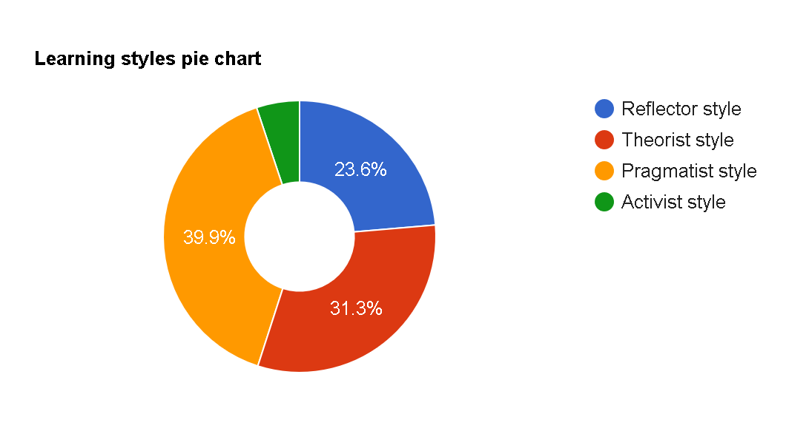

For the Myers Briggs test by 16 personalities, I received the result of INTJ-A, from examining the online information I can determine that this means I have an unbelievable keen an inquisitive mind, I have a strong focused on independence and self-reliance, I am determined and versatile in my abilities and strengths and can overcome most tasks that life can throw my way.
However, this is reflected in a potential for arrogance, a combative nature, and a overly critical mind that tends to judge and write off people with out giving them a second change. As an architect I am a fantastic problem solver for complex tasks but lack key skills and understanding around human emotion and interactions.
Since performing this test It has open my eyes and gives me the impression I’m reading my own book or looking into a mirror, with a vast and large portion of my mind and history aligning with the strength and weakness associated with this personality type.
Architects have a series of fantastic strengths, the key strengths are Rationality, being informed, independence, determined, curious and versatile. Architects will use these strengths daily to help them tackle and overcome most of what life throws at them!
The architect personality type has a core focused on being relational and pride themselves on their minds and the ability for them to conquer and overcome any situation. This allows architects to resolve even the hardest problems.
Architects are extremely informed individuals; they spend a great deal of time and energy focusing on understanding and rationalizing all situations. This means an architect will always value research and analysis over hunches and assumptions. An Architect will use this knowledge as power to firmly back and stand by there choice and decision-making process.
All architects have a massive focused on self-reliance and independence, this links in with their informed drive and key decision making, architects will be focused on independent conclusions based on reason and their analysis.
All architects have a massive focused on self-reliance and independence, this links in with their informed drive and key decision making, architects will be focused on independent conclusions based on reason and their analysis.
Architect’s love testing and trying new ideas, they have a drive for rational and evidenced based improvements to their own ideas and beliefs.
The versatility of an architect comes from the above listed skills, they all work together to provide the architect with a fantastic framework for dealing with any situation, this allows architects to succeed in a wide variety of fields.
The fantastic strengths that architects possess come with some significant trade-offs, most with the most notable being, Arrogance, Dismissive, Combative and Overly Critical.
Due to architects’ lust for knowledge and their informed and independent nature they have a tendency to become arrogant and overconfident in their ideas and beliefs.
As we learned in the strength’s rationality is valued above all else this has led to architects dismissing and disregarding emotions. This can manifest in architects appearing ignorant and impatient with anyone who has value and respect for feels and emotions.
An architect will have a great deal of self-control specifically aimed at their internal politics, feelings, and ideas. As a result, they can appear very critical and unfair to people who cannot achieve this level of control. The overly critical trait also links in extremely well with the arrogate weakness as the two are not mutually exclusive and in fact go hand in hand.
Architects lean into blind hate and are extremely strict on rules and regulations. Architects will almost always follow regulations and authority figures to the teeth and impose their will and policy on others.
An architect relentless rationality and data driven ideas can leave them clueless in matters of the heart and emotions, they will struggle to understand the early stages of relationships. This disconnect can lead architects to feeling cynical and dismissing of romantic matters.
After performing an analysis on this data, we can assume that as an architect I would perform extremely well leading a team, specifically directing the goal and vision for the project using the architect’s strengths of rationality, determination, and versatility to easily direct and see the project to its completion.
Some key areas to be aware off, would be the critical judgement weakness and arrogance, followed by a lack understanding when dealing with the team, I believe these weaknesses can be countered by architects placing a significant priority to understanding and empathy with the team and using their skills to better be aware of and understand people.
Based on the data provided we can assume that I learn from best from a Pragmatist and Theorist style of learning with a core focus on Practical trial and error learning backed by the theorists keen developed models and theories.
Being a pragmatist, I need to really see things occur in the real world, foreign concepts and exaggerated theories do not sink in as well as seeing real world actions and consequences. Expanding on this idea of seeing things in action as a pragmatist one of the ways I learn the best is through trial and error and self-investigation. Ill act quickly and confidently once I gain knowledge and experience in a certain field or topic!
Theorists like to spend a great deal of time expanding and contemplating a topic before actioning it and testing things. A Theorist will work on developing a working and coherent theory before jumping into testing it!
Reflector traits reward silent observation and have the person favours a slow and meticulous approach to learning, they collect and analyse information to assist them in developing a plan and theory for how to proceed and understand information.
The 5 big factors test is another personality test similar to Myers Briggs and 16 personalities. 5 Big factors focus on giving you a percentage based on 5 key personality traits, this is its primary way it makes assumptions. 5 Big Factors differs from 16 personalities by only providing a percentage for each of the 5 traits rather than placing you into a generalized category. Intellect/Imagination is my largest factor by a mile! this factor represents the willingness to express, take in and process new ideas and concepts. This is followed by conscientiousness, conscientiousness representants an in-depth awareness of my actions and their consequences and behavior.
Represents several core focuses for an individual, one of the paramount of these is the idea of the persons willingness to try new things and activities, this can be reflected in any part of life from studying a topic to troubleshooting at work, the intellect and imagination trait will allow people to explore all the options and new suggestions. Expanding on that they place a high focus on artistic and cultural experiences with a love for art and history.
Contentiousness really has a core focus on goal-oriented behavior with a key focus and drive to be completely aware and understand how our actions and behaviors has certain consequences in the real world! On the reverse of this we could assume that a person with a lower conscientious score would be more impulsive.